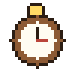

Stage 2: Algoritma Bubble Sort
Memahami Cara Kerja Bubble Sort
Bubble Sort membandingkan dua objek yang bersebelahan, menukarnya bila urutannya belum sesuai, lalu mengulangi setiap Pass hingga seluruh objek terurut.
Mode Pembelajaran: Simulasi Langkah demi Langkah
5/5
0/15
Gerbang:
0/3
CP 2: Belum

0 dtkSkor: 0